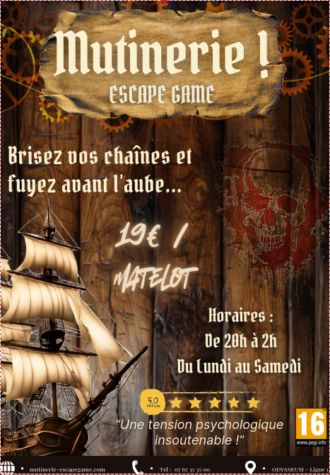

SAE 1.05 : Escape Game
Contexte : Durant nos projets scolaires, nous avons pu, par groupes de 4, concevoir un Escape Game, et planifier l'aspect organisationnel qui se cache derrière. Nous avons alors conceptualisé un thème, ici le thème pirates, et imaginé différents épreuves pour les participants, ainsi qu'une progression et le développement d'un site WEB de présentation de cet Escape-Game. Vous pourrez trouver en illustration une photo du flyer que nous avons produit pour l'aspect marketing de notre projet.
À propos
J'ai pu, à travers ce projet, me familiariser avec les compétences suivantes :
- Le management des systèmes d'informations
- Le développement WEB
- Le travail marketing
- Le recueil de besoins
Galerie & Rendu
